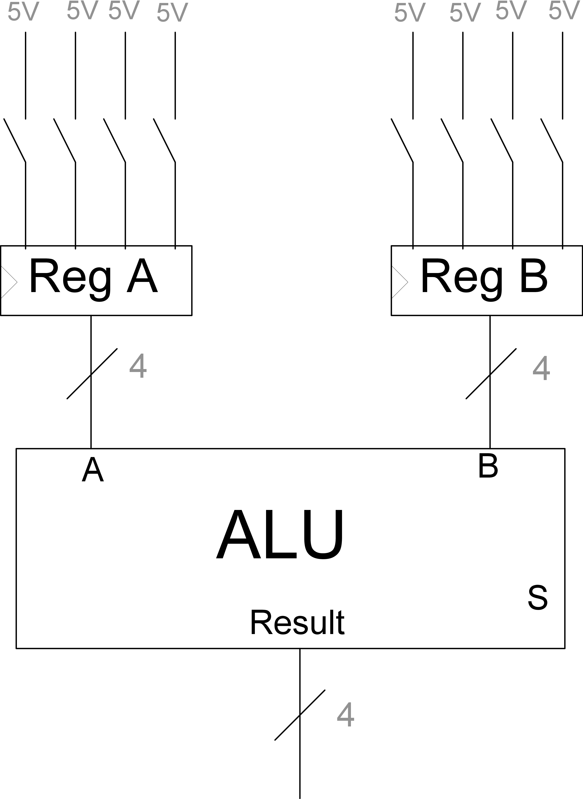
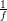

Figura 8: Display de 7 segmentos para mostrar operación realizada con la ALU.
IIC2343 Arquitectura de Computadores
Interacción Humano-Computador
©Alejandro Echeverría, Hans-Albert Löbel
Construir una máquina que sea capaz de realizar operaciones y almacenar datos no tiene mayor utilidad a menos que una persona pueda interactuar con ella, para entregarle indicaciones e información y para obtener los resultados de los procesamientos realizados o la información almacenada. De esta forma para completar un computador funcional debemos agregar la capacidad de interacción entre humano y computador, y estudiar como implementar dicha interacción.
La comunicación entre persona y computador debe ser idealmente en ambas direcciones. En general se dice que un dispositivo que permite que un humano interactúe con un computador se denomina dispositivo de entrada o input. Cuando el dispositivo es controlado por el computador para entregar información a un humano se denomina dispositivo de salida o output. Al conjunto de estos dispositivos se les denomina de Entrada y Salida, E/S, o Input y Output, I/O.
La forma más simple de interactuar con un computador es realizarlo directamente en el lenguaje que este maneja: números binarios. De manera similar la forma más simple para que un computador se comunique con nosotros es a través de mecanismos que fácilmente puedan ser controlados mediante representación binaria.
Un primer dispositivo de entrada que permite entregar información binaria al computador es el interruptor. Un interruptor es básicamente un mecanismo con dos estados, conectado y desconectado, que en caso de estar conectado permite el paso de corriente eléctrica entre sus extremos, y en caso de estar desconectado no lo permite. Estos dos estados pueden ser fácilmente interpretados como los dos posibles números binarios: si el interruptor está desconectado, se interpreta como un 0, si el interruptor está conectado, se interpreta como un 1.
Los interruptores nos permiten interactuar de manera directa con los componentes vistos previamente. Por ejemplo, podemos usar interruptores para cargar los bits de datos almacenados en un par de registros que estén conectados a una ALU, como se observa en la figura 1. Es importante señalar que el valor 5V, conectado a los interruptores en la figura, significa 5 volts y representa el voltaje eléctrico más comúnmente usado para representar un 1 en circuitos binarios.

También es posible usar interruptores para representar bits de control: por ejemplo, podemos usar tres interruptores para indicar la operación seleccionada por la ALU, como se observa en la figura 2.
Para completar el circuito anterior, falta agregar la señal de control de los registros, para permitir el almacenamiento de los números entregados a través de los interruptores. Una opción sería agregar otro interruptor, que al estar conectado indique un 1 en la señal de control y permita el almacenamiento. Dado que los registros tienen señal de control activada por flanco de subida, no necesitamos tener la señal 1 todo el tiempo, y nos basta con enviar un «pulso» que indique un 1 para que deje almacenar, pero que luego la señal de control vuelva a 0. Para esto podemos ocupar otro dispositivo: un botón. Al igual que un interruptor, un botón puede tener dos estados, conectado y desconectado, pero la diferencia es que el botón debe permanecer presionado para mantener la conexión, mientras que el interruptor queda fijo en el estado de conexión, sin necesidad de tener que estar presionándolo.
Podemos agregar entonces un botón para controlar la señal de almacenamiento de los registros, como se observa en la figura 3.
Si los interruptores y botones fueran ideales, cuando se conectan deberían inmediatamente representar un 1, y cuando se desconectan, inmediatamente un 0, como se observa en la figura 4.
Sin embargo, esto no ocurre en la práctica, debido a que los circuitos eléctricos no son ideales, y por tanto no tienen transiciones instantáneas. Lo que ocurre en la práctica es lo que se observa en la figura 5: al cerrar el interruptor, la señal eléctrica «rebota» varias veces en torno al valor de voltaje asociado al 1 binario, hasta que finalmente se regula en el estado correcto. Mientras la señal está rebotando se dice que esta está en régimen transiente, y cuando se estabiliza, entra en régimen permanente.
El problema del período transiente es que la señal va a cambiar de 0 binario a 1 binario varias veces, ya que ambos valores son detectados para ciertos rangos, no para valores específicos. Así, presionar un botón una vez, lo que debería interpretarse como un solo 1, podría percibirse como una secuencia de 1s seguidos, lo que dependiendo de qué estemos haciendo con el dato ingresado puede presentar problemas.
La solución a este problema consiste en agregar entre el interruptor y el componente un circuito de retraso, que sólo dejará pasar la señal luego de un cierto tiempo. De esta forma, si este circuito se calibra para dejar pasar la señal sólo después del transiente, se evita el problema del rebote.
Para que el computador despliegue información de manera simple, necesitamos algo similar a los interruptores, es decir que funcionen con dos estados representables por los números 0 y 1, y que dependiendo del estado, se modifique alguna propiedad del dispositivo que sea percibible por el ser humano. Un dispositivo que cumple con lo anterior es el led (light-emitting diode). Un led es un componente con dos conectores, que cumple que cuando pasa corriente entre estos se ilumina, y cuando no pasa corriente, no se ilumina. De esta forma podemos interpretar un 1 como una luz prendida, y un 0 como una luz apagada.
En la figura 6 se observan 4 ledes conectados a la salida de la ALU para representar la información del resultado de la operación como un número binario, mediante ledes encendidos y apagados. Los ledes se representan con el símbolo de un diodo (triángulo) más dos flechas que indican que emite luz. El símbolo al cual se conecta el led en el diagrama se conoce como «tierra» y se interpreta como el punto en que se completa el circuito eléctrico.
Ocupando directamente los ledes para representar números binarios ya nos permite percibir información desde el computador, sin embargo, nos gustaría que esta información estuviera en un formato más fácil de leer y entender que un número binario. Para lograr esto se pueden utilizar varios ledes, que en conjunto formen símbolos más complejos, por ejemplo todos los dígitos decimales. Un componente que permite esto es el denominado display de 7 segmentos, que corresponde a un arreglo de 7 ledes ubicados en forma de 8. Con este display es posible, encendiendo ciertos ledes específicos, formar los símbolos de los dígitos decimales. Más aún, podemos incluso representar algunas letras, lo que nos permite representar números en hexadecimal, como se observa en la figura 7.
Podemos entonces, reemplazar nuestro display binario del circuito anterior por un display de 7 segmentos que entregará el resultado en representación hexadecimal. Para lograr esto, sin embargo, debemos diseñar un circuito que convierta el número binario de 4 bits en los 7 bits necesarios para prender los ledes que correspondan en el display y, de esta forma, representar el número correcto. Este circuito tendrá 4 entradas y 7 salidas y puede ser fácilmente diseñado con compuertas básicas. En la figura 8 se muestra una abstracción de este componente o controlador del display, completando el cicruito para desplegar el resultado de la ALU.
Los dispositivos mostrados en la sección previa permiten tener una interacción básica con los computadores. Sin embargo, no nos bastan para realizar interacciones más complejas. La comunicación de entrada vista previamente, por ejemplo, obliga al humano a ingresar el número en binario, lo que no es lo ideal, ya que limita la complejidad de la información que se puede enviar.
La solución al problema de interactuar con información más compleja se basa en primer lugar en el uso de sensores y dispositivos que sean capaces de convertir información en señales eléctricas (y viceversa). Una vez convertida la información en señal eléctrica, se procederá a convertir en números binarios entendibles por el computador.
Para explicar como ingresar información compleja a un computador, utilizaremos como ejemplo el sonido. El sonido se puede interpretar físicamente como el movimiento del aire, producido por ondas de presión. Como se señaló anteriormente, el primer paso para poder ingresar información al computador es convertirla a una señal eléctrica. En el caso del sonido, el dispositivo que convierte movimiento de aire en señal eléctrica es un micrófono. Un micrófono consiste en un imán que se mueve por la presión del aire y que al moverse induce corriente eléctrica proporcional al movimiento. De esta manera el movimiento del aire se traduce en una señal de corriente eléctrica.
Para convertir la señal eléctrica en información almacenable en el computador se requieren realizar diversos pasos que se describen en la siguiente sección.
Siguiendo el ejemplo anterior, luego de usar el micrófono obtenemos una señal eléctrica, la cual se puede graficar como una variación en la intensidad de corriente en el tiempo, como se observa en la figura 9. La señal en este momento se caracteriza por ser una señal continua o análogica, es decir para todo tiempo tiene un valor, no hay saltos entre instantes de tiempo.
Podemos pensar la función descrita en la figura 9 como un conjunto de valores asociados a un determinado tiempo. Nos interesaría entonces poder almacenar estos números en el computador y de esta forma almacenar la señal completa. Sin embargo, como la señal es continua este conjunto de valores es infinito, ya que para cada posible tiempo en el rango determinado, existirá un número particular que indicará el valor de la señal. Esto nos presenta un problema, ya que el computador no tiene espacio de almacenamiento infinito, y por tanto, debemos reducir la cantidad de números para poder almacenarlos.
Un proceso que permite reducir la información de una señal es el muestreo el cual consiste en obtener una muestra representativa de valores de la señal, separados por deltas de tiempo iguales, como se observa en la figura 10. Esta muestra de valores también se interpreta como una señal, denominada señal de tiempo discreto o señal discreta, y debido a esto este proceso también se denomina discretizar la señal.
El delta de tiempo entre cada muestra se denomina el período de muestreo, simbolizado por la letra T, que representa cada cuánto estamos obteniendo una nueva muestra. La frecuencia de muestreo, f, es una medida equivalente que representa el inverso multiplicativo del período (T = ).
Se podría pensar que luego de discretizar la señal estamos listos para almacenar la información en el computador. Esto no es así, debido a que aunque ahora tenemos un número finito de valores, cada uno de estos valores puede estar dentro de un rango infinito de posibilidades. El proceso que se utiliza para reducir este rango infinito se denomina cuantización, y consiste en definir que un valor en un determinado rango puede tomar sólo un valor de una serie finita. Al igual que en el muestreo la distancia entre estos posibles valores es constante. La cantidad de valores disponible se denomina resolución y puede ser medida tanto como cantidad de números, como en bits (esto último es lo más habitual).
Si se realiza una cuantización directamente sobre la señal continua se obtiene una señal como la de la figura 11, la cual tiene infinitos valores en el tiempo, pero cada uno de estos valores toma sólo un valor dentro de un conjunto finito de posibilidades.
La conversión de una señal análogica a información almacenable por el computador involucra, como es de esperar, la mezcla de los dos procesos visto anteriormente: muestreo y cuantización, en ese orden. Luego de realizar ambos procesos, se dice que se ha obtenido una señal digital, es decir un conjunto de valores numéricos que sí puede ser almacenado por el computador, lo que se observa en la figura 12.
El componente que se utiliza para convertir una señal eléctrica continua en una señal digital se denomina conversor análogico-digital, el cual recibe una entrada análogica y entrega con un período T segundos valores representados por n bits de resolución.
El principal problema de este proceso antes descrito es la pérdida de información. Dado que estamos reduciendo infinitos valores de rango infinito, a un número finito de valores de rango finito, se está reduciendo también la información. Para aumentar la cantidad de información obtenida, es necesario aumentar los dos parámetros de la conversión: frecuencia de muestreo y resolución. Si queremos almacenar más valores por segundo, debemos aumentar la frecuencia de muestreo; si queremos que cada valor tenga mayor precisión, aumentamos la resolución.
La conversión de una señal digital a una análogica corresponde al proceso inverso que el antes descrito. Para realizar este proceso se utiliza un componente denominado conversor digital-análogico, el cual recibe n bits cada T segundos y entrega una señal eléctrica continua.
El proceso consiste en utilizar lo que se denomina un filtro de reconstrucción que a partir de cada par de valores digitales, interpola los valores intermedios, completando la señal. Una vez reconstruida la señal continua, se pasa a convertirla nuevamente a la representación física que corresponda. Por ejemplo en el caso del audio, se ocupa un parlante, el cual recibe una señal eléctrica, y la utiliza para mover un imán, el cual a su vez induce movimiento en el aire, generando el sonido que corresponde.